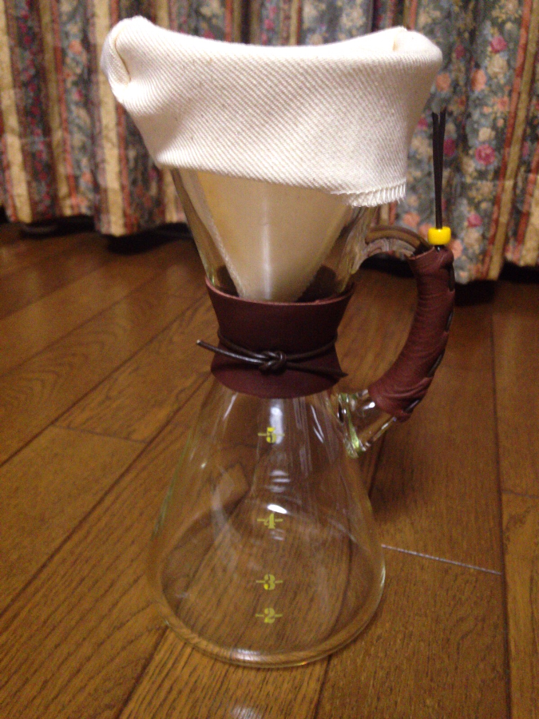

香珈珈琲は、深煎りのスペシャルティーコーヒー豆専門店です。珈琲はシンプルな飲み物。コーヒーを通して、生活にゆとりと元気を生み出し、笑顔を創ることを目指しています。家族の笑顔、パートナーの笑顔、子供の笑顔、お父さんお母さんの笑顔。いっぱい生み出します。
ホワイトカップの日を勝手に決めちゃいました。広島コーヒーホワイトカップの日です。これを全国に広めます。
2025年09月14日（土）11:00–17:00
2025年09月28日（土）11:00–17:00
月2回土曜日の営業です。
最新情報はLINEでお知らせします。
直火がコーヒーの香りを引き出してくれます。
今は、安定的に焙煎できるようになりましたが、
10年前はただ焦げているだけの豆でした。
コーヒーの香りを知ってほしい。
コーヒーの香りで素敵な時間をすごしてほしい。
少しでも、深煎りのコーヒーの味を知ってほしい。
コーヒーは冷めていくところに醍醐味があります。
もしも、香珈のコーヒーで甘みを感じて頂けたらうれしいです。
家庭で美味しく飲めるコーヒーを目指して、生産地の情報から焙煎、抽出方法など勉強の途中です。プジョーG1ミルで挽いた珈琲ワークショップも開催しています。詳しくはメンバー倶楽部でお知らせします。


小泉硝子製作所は、1912年、小泉重蔵によって創業された特殊なガラス瓶のメーカーです。ビーカーやフラスコなど特殊な「理化学医療用ガラス製品」の製造を行っていました。
創業から100年以上の永い間に培われた「職人の技」は、ホウケイ酸ガラス（耐熱ガラス）を自社内で溶解し多種少量の生産形態で、医療用製品に欠かせない存在であり、その技術を活かしたネルドリッパーなど生活に密着した逸品を創り出しています。